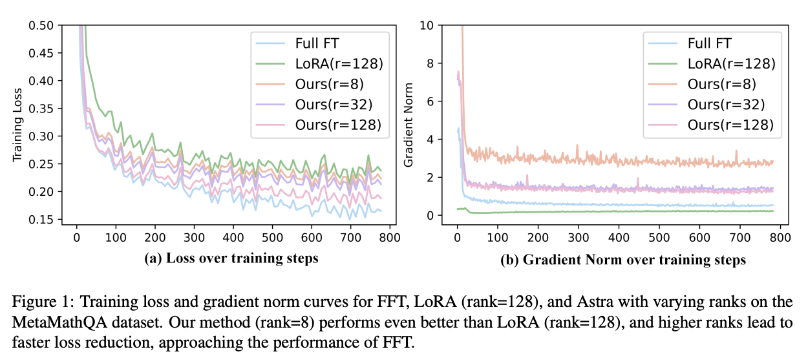
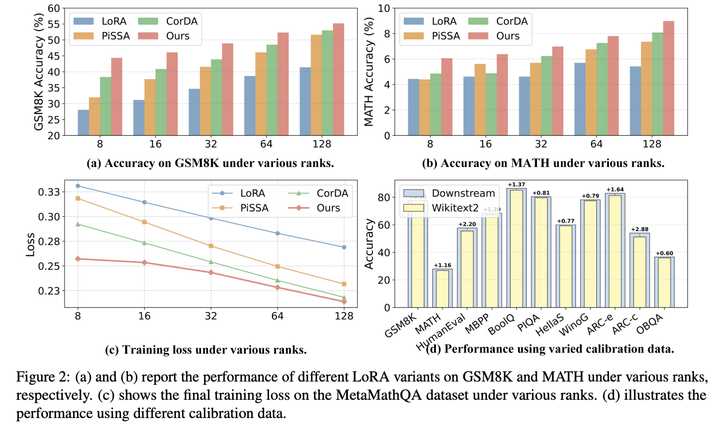
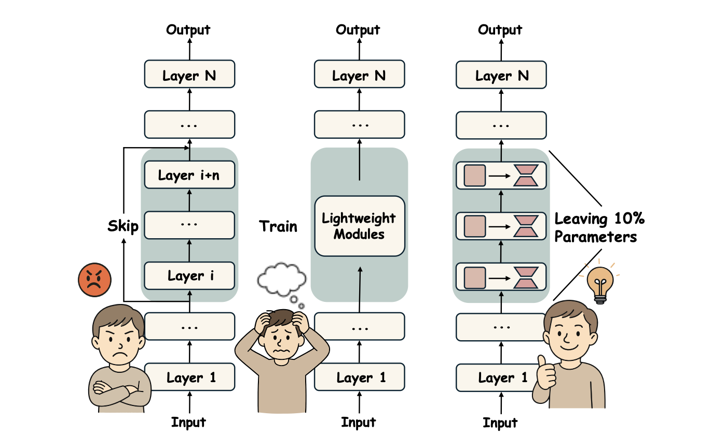
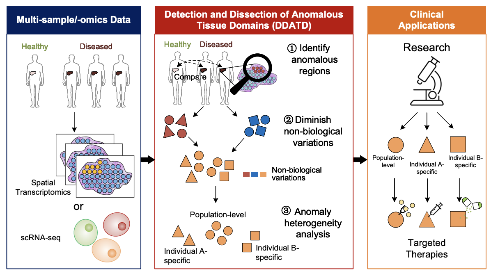
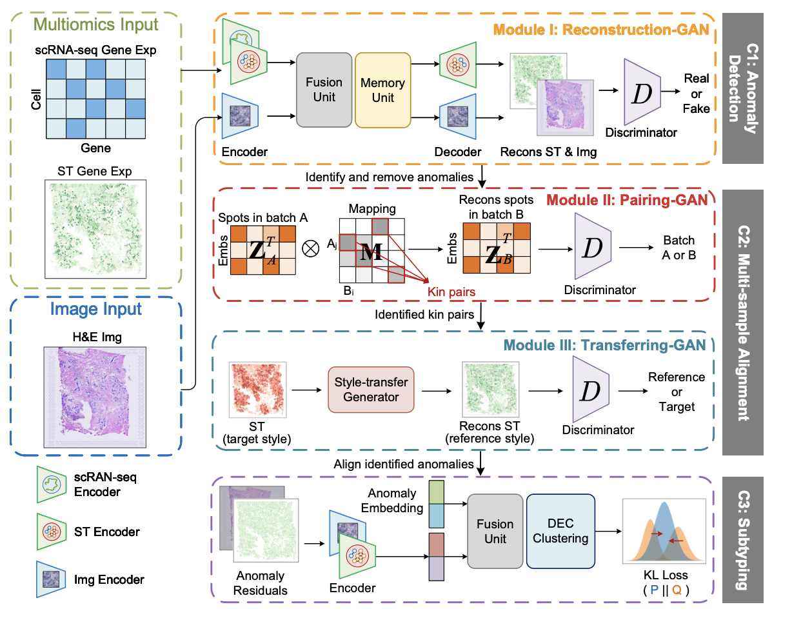

Publications

🔍 Overview
In this work, we propose Astra (Activation-Space Tail-Eigenvector Low-Rank Adaptation), a novel PEFT method that leverages the tail eigenvectors of the model output activations—estimated from a small task-specific calibration set—to construct task-adaptive low-rank adapters. By constraining updates to the subspace spanned by these tail eigenvectors, Astra achieves faster convergence and improved downstream performance with a significantly reduced parameter budget.


Citation
@article{liu2026astra,
title={Astra: Activation-Space Tail-Eigenvector Low-Rank Adaptation of Large Language Models},
author={Liu, Kainan and Zhang, Yong and Cheng, Ning and Zhu, Yun and Wang, Yanmeng and Wang, Shaojun and Xiao, Jing},
journal={arXiv preprint arXiv:2602.19111},
year={2026}
}

🔍 Overview
Recent studies have demonstrated that many layers are functionally redundant in large language models (LLMs), enabling model compression by removing these layers to reduce inference cost. While such approaches can improve efficiency, indiscriminate layer pruning often results in significant performance degradation. In this paper, we propose GRASP (Gradient-based Retention of Adaptive Singular Parameters), a novel compression framework that mitigates this issue by preserving sensitivity-aware singular values. By replacing redundant layers with only a minimal set of parameters, GRASP achieves efficient compression while maintaining strong performance with minimal overhead.

Citation
@inproceedings{liu2025grasp,
title={GRASP: Replace Redundant Layers with Adaptive Singular Parameters for Efficient Model Compression},
author={Liu, Kainan and Zhang, Yong and Cheng, Ning and Li, Zhitao and Wang, Shaojun and Xiao, Jing},
booktitle={Proceedings of the 2025 Conference on Empirical Methods in Natural Language Processing},
pages={26344--26359},
year={2025}
}

🔍 Overview
STANDS is a GAN-based multi-task deep learning framework, which can detect and dissect anomalous tissue domains (DDATD) with Spatial Transcriptomics or scRNA-seq.


Citation
@article{xu2024detecting,
title={Detecting anomalous anatomic regions in spatial transcriptomics with {STANDS}},
author={Xu, Kaichen and Lu, Yan and Hou, Suyang and Liu, Kainan and Du, Yihang and Huang, Mengqian and Feng, Hao and Wu, Hao and Sun, Xiaobo},
journal={Nature Communications},
volume={15},
number={1},
pages={8223},
year={2024},
publisher={Nature Publishing Group UK London}
}